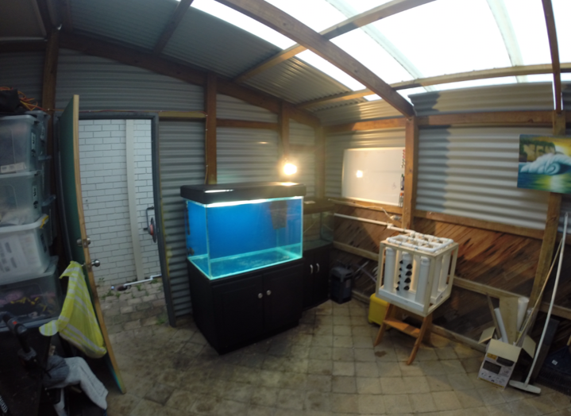
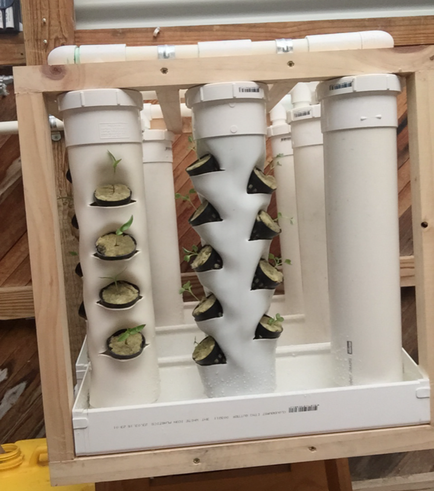

Overview
My project idea involves using Arduino and various sensor probes to create an autonomous, scalable and modular aquarium/aquponics/hydroponics system. For the scope of this assignment I will focus on the aquarium/aquaponics as its where I have the most experience. Aquariums and Aquaponics systems can be quite volatile as it requires keeping water parameters within certain ranges of concentration. The parameters that are to be monitored are PH, O2, Nitrate, Nitrite, Ammonia and Ammonium. Within an aquarium there are bacteria that convert the toxic ammonia and ammonium into nitrates and nitrites which are nutrients for plants and non-toxic to the fish. This system revolves around the idea of adding fresh water to keep the toxic concentrations of ammonia and ammonium below a certain a level. Nitrates and Nitrates can become toxic at higher concentrations if they are not used by plants. As well as adding fresh water to keep the PH within a certain range, this depends on the fish but a general rule of thumb is around 7. Adding an automatic fish feeders is easy and can be bought on eBay for under $20.

Motivation
As we as a civilization expand and grow so do our food requirements. Traditional farming and agriculture involves using 2D plots of land and huge amounts of water and fertilizer to yeild a harvestable and sellable product. This is simply not sustainable. As our poopulation grows, our food and water requirements grow, our requirements of land for housing grow too. Aquaponics offers a way of farming that uses 90% less water than conventional farming. It yields a product that is 100% organic using the excriment of the fish as fertilizer. We are able to utilise 3 dimensional structures to grow in. I personally created a cube that would allow me to grow 81 heads of lectuce in a space equeal to 0.5m^3 not including the aquarium space required for the fish. As currently the price of water is so cheap, aquaponics is considered an expensive way to grow food. As we continue to grow as a population our water prices will grow too. Its simple supply and demand. Aquaponics also has a relatively low startup capital required compared to farming which requires hectares of land, and expensive equipment such as tractors and irrigation. Each harvest strips the land of nutrients that took millions of years of decomposition to create. It is usually but not always replaced with artificial and toxic fertilizer that ends up in our water supply.
Description
This project is scalable and modular, meaning a system of any size can be created and it can be made bigger or smaller with ease at a later date. This project will aim to create a system that produces 100% organic food to harvest while minimising the space required for the food to grow and the water and fertilizer required. It is a self contained system meaning that once everything has been setup nothing else needs to be added except fresh water to maintain the concentrations of the Ammonia and Ammonium. The system will need to have a line that connects it to a water supply through an electronic ball valve.
Sensor probes will be used to detect the levels of Ammonia and Ammonium in the system, these sensor probes come Arduino compatible and will relay the information back to the Arduino system for processing. If the readings are above a certain range then an electronic ball valve will open for a predefined time allowing a certain amount of fresh water to enter the system which will reduce the overall concentration of ammonia and ammonium in the system maintaining a safe environment for the fish. The data will be logged via Arduino allowing the system to be further calibrated. If the ammonia and ammonium levels are consistently too high this means that there are not enough bacteria converting the ammonia and ammonium to nitrite and nitrate. Further filter media can be added to the biological filtration system to increase the surface area for bacteria to breed on. Alternatively this may indicate that there are too many fish in the system for the bacteria to handle and if the bacteria numbers cannot be increased then fish may be subtracted from the system until a harmony is met where the fish are producing the correct amount of ammonia and ammonium for the bacteria to convert into nitrate and nitrite for the plants.
As the sensor probes are expensive, one can be used in the beginning to provide a proof of concept. One single ammonia probe to detect the concentration of ammonia in the system. Once the single ammonia probe is working with the electronic ball valve consistently, more probes can be added to increase the complexity and accuracy of the system. The same process can be repeated for all additional probes that are to be added to the system.

Tools and Technologies
The tools that will be required to take the project from it current stage to final completion are as follows.
Vernier Ammonium Ion Selective Electrode
Vernier Ammonia Ion Selective Electrode
Vernier Nitrate Ion Selective Electrode
Vernier Nitrite Ion Selective Electrode
Go Direct Temperature Probe
Go Direct PH Sensor
Go Direct O2 Gas Sensor Probe
Vernier Arduino Interface Shield
SparkFun Arduino RedBoard
Electronic Ball Valve
This is a list of hardware that will be required to take the project to COMPLETION. As this is a scalable and modular project it is possible to start with just one ammonia ion selective electrode, the interface sheild and the SparkFun Arduino RedBoard. This simple version of the system will stop the fish dying from ammonia spikes and be a great start to a fully autonomous system.
The software will have to be written, there are various working versions that people have posted on GitHub but for the experience I would like to hand code everything myself. Arduino uses C++. A language I have little experience with, but can learn.
Skills Required
Arduino is written in C++. This is a language that I have little experience using. I would be relying on my previous Object Oriented coding knowledge in Java to help me learn the syntax but I am familar with the concepts. Eventually I would like to have a web application that dictates the current levels for all sensors with settings to control the tempreture and ability do manual water changes. A button that would open the electronic ball valve for a specific amount of time to add a certain amount of fresh water.
Outcome and Reflection
There is no getting away from the fact that this is a massive project that could take multiple years to complete but as it is modular and scalable its possible to start really small with even just a SparkFun Arduino Redboard and an electronic ball valve. Just getting the valve to open at the press of a button on a web application would be a great small and scalable project that would fit the scope of this unit. If the project could be completed in its entirety, it would change the way we grow food. It would merge my two passions, IT and Horticulture. I think its a great goal to have and a great project to have that I can work on for years to come. If technology like this became mainstream it would allow the individual to grow their own organic food in their own home autonomously. After the system is paid for and setup the only cost would be the seeds for the vegetables they wanted to grow and the cost of the fish to put in the system. It's form factor could be redesigned to something that resembles a filing cabinet. With the aquarium in the bottom and grow tubes on top. It could sit next to the fridge in the kitchen. Its possibilites are really endless, from being ontop of high rise buildings to be sitting in greenhouses around the metro area with drones on standby to deliver the produce to customers for a fee. It really could change the world. With water becoming more and more scarce everyday, this is the way we need to be going. We need to be looking at how the individual can get involved in helping the world fix its problems.